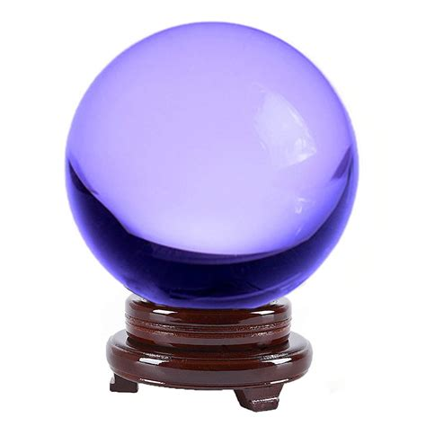
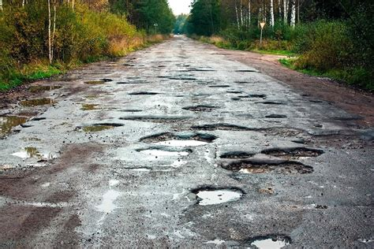

(or “Why Trouble Comes in Threes”)
Predicting what will happen next is often a tricky business.

Unless you have one of these - available at Walmart!
But, with the right assumptions, we can often use statistics to make a reasonable guess.
To do this, we almost always make use the concept of independence.
What is Statistical Independence?
One of the most important assumptions when we use statistics is that are events are “independent”.
What this means is that the probability of the previous event happening does not affect the current situation.
Heads or Tails?
Coin tosses are a great example of independent events - each result has no impact on the next coin flip.
So, (assuming a fair coin) you could see 5 heads in a row and still confidently say that the next flip will be 50/50.
| Consecutive Heads | Next = Head |
|---|---|
| 0 | 50% |
| 1 | 50% |
| 2 | 50% |
| 3 | 50% |
| 4 | 50% |
| 5 | 50% |
In this case, the independence of these events makes it easy to assess the likelihood of what will happen next.
However, in many real life situations, things often aren’t quite so simple.
Independence in Daily Life
One practical lesson that you can take away is:
Be extra vigilant after failures happen
Statistics is great for guessing the likelihood of events when they are independent from each other.
But when that is not true (which is often), using a statistical estimate can be badly wrong, as we’ll see below.
Getting a Flat
Nothing ruins a nice bike ride quite like getting a flat tire.
Luckily, flats don’t happen all that often.

Unless you live here…
Let’s assume there’s a 1% chance of getting a flat per hour of riding. We can actually model the number of flats we expect to get on a ride using a Poisson distribution:
| # of Flats | Probability |
|---|---|
| 0 | 99.03% |
| 1 | 0.96% |
| 2 | 0.01% |
Which confirms our experience that a flat tire isn’t likely to be in our future.
Uh-Oh…
Eventually, you will get a flat. No worries - you quickly replace your tube and set back off again.
Remember, our model shows there’s almost NO chance you’re going to have a SECOND flat. So, you should be safe, right?
But, 5 minutes later…. «Another flat»
Now you’re a bit suspicious - it sure seems like our estimated probability for the 2nd flat tire was wrong. And this is indeed the case.
When Things Aren’t Independent
The issue is that these two events were not unrelated.
After the 1st flat, we quickly replaced our tube and moved on. What we didn’t see was the piece of glass that caused the flat, still embedded in our tire.
Since the underlying issue was not addressed, further flats are much more likely to occur*:
| # of Flats | Probability |
|---|---|
| 0 | 36.59% |
| 1 | 36.79% |
| 2 | 18.68% |
| 3 | 6.10% |
| 4 | 1.49% |
| 5 | 0.30% |
| 6 | 0.05% |
| 7 | 0.01% |
* Let’s assume the normal rate of flats goes up 100-fold
In short, our 1st and 2nd flats were not independent.
If we had removed the glass, our original statistical guess would likely have been correct - it’s pretty unlikely that we would run into 2 separate pieces of glass. But, since we didn’t double-check things, we’re now stuck on the side of the road fixing ANOTHER flat tire.
Summing Up
Independence of events is crucially important to making good guesses.
When events are independent, we can use statistical modeling to make reasonable estimates. But when the likelihood of one event affects another, classical statistics can give answers that are badly wrong.
These situations pop up frequently in real life. From flat tires to stock returns, many phenomena exhibit some level of dependence.
So, any time you make an estimate, it is wise to assess whether your events are truly independent.
Up Next: Bias
Next week, we’ll wrap up our discussion on the art of guessing by exploring bias.
Stay tuned to see why bias isn’t always a bad thing.
===========================
R code used to generate plots:
- Getting a Flat
library(data.table)
library(knitr)
library(kableExtra)
library(formattable)
### Chance of a flat - 1% per hour
set.seed(061825)
s_data <- rpois(lambda=0.01, n=100000) |> as.data.table()
result_table <- s_data[,percent(.N/100000),by=V1]
colnames(result_table) <- c("# of Flats", "Probability")
### Display data as a table
options(kableExtra.html.bsTable = TRUE)
kable(result_table, align = c("c","c")) |> kableExtra::kable_styling(bootstrap_options = c("striped", "hover"), full_width = FALSE)
### Chance of a flat - 1 per hour
set.seed(061825)
r_data <- rpois(lambda=1, n=100000) |> as.data.table()
result_table_2 <- r_data[,percent(.N/100000),by=V1][order(V1)]
colnames(result_table_2) <- c("# of Flats", "Probability")
### Display data as a table
options(kableExtra.html.bsTable = TRUE)
kable(result_table_2, align = c("c","c")) |> kableExtra::kable_styling(bootstrap_options = c("striped", "hover"), full_width = FALSE)